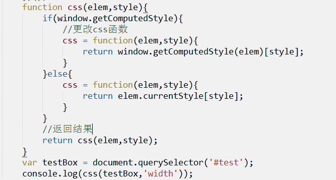

js-设计模式-JQ入门
作者： 千锋李文浩
时间： 17/02/25
属性分类(扩展)
function Person(name,age){
this.name = name;
this.age = age;
}
Person.prototype.type = '人类';
Person.prototype.eat = function(){}
function Man(){
//Person.call(this,name,age);
Person.apply(this,arguments);
}
var xtbb = new Man("小头爸爸",30);
1、私有属性
name age
2、公有属性
type eat
try catch（扩展）
1、JavaScript可以使用try...catch来进行异常处理（拦截错误信息）
2、写法
try {
//需要执行的代码
}catch(e){
//错误处理 e 程序遇到错误时的报错信息
}
惰性函数（扩展）
惰性函数：函数在第一次被调用时会根据某些条件进行分支处理，在分支中重新定义函数，以后每次再进行调用函数时，不再进行判断。

设计模式（重）
1、单例模式
方法调用多次仅产生唯一的实例（创建对象或者其他）


2、代理模式
用一个对象B代理另一个对象A的事物，当需要访问A的方法时，调用B同样的方法先进行各种处理。

3、适配器模式
当原有的接口不能满足现在需求时，编写另外一个函数实现数据或者接口的对接。


实战
使用单例模式封装 信息提示框 插件
JQ基础（重）
1、选择器
2、属性
3、动画
文档加载完成（重）
1、文档加载完成指的是 所有的html加载完毕
2、jq加载完成：
$(document).ready(function(){
//文档加载完成时的处理
});
//简化
$(function(){
//文档加载完成时的处理
});
JQ使用说明（重）
1、每次写 $() 都会创建新的对象
2、不要重复使用$()获取同一个或者多个元素，如：
$('p').css();
$('p').animate();
原因：每次使用$('p')都会从dom中查找，而且会创建对象，不仅浪费=内存，还影响性能。
基础选择器
id
标签
类
*
伪类选择器（重）
:first 获取选择器得到的 第一个 元素
:last 获取选择器得到的 最后一个 元素
:eq(index) 获取选择器得到的 指定下标 的元素
:even 获取选择器得到的 下标为偶数的 元素
:odd 获取选择器得到的 下标为奇数的 元素
:gt(index) 获取选择器得到的 下标 > index 元素
:lt(index) 获取选择器得到的 下标 > index 元素
:not(selector) 获取选择器得到的 选择器中没有selector 的元素
:has(selector) 获取选择器得到的 子元素中有selector 的元素
[attribute=value] 根据属性和属性值获取元素
css（重）
对象.css() 用于获取或者设置元素的样式
1、获取元素样式
对象.css(样式名); $('p').css('width');
2、给元素设置样式
a、设置单个样式值
对象.css(样式名，样式值);
b、设置多个样式值
对象.css({
样式名1: 样式值1,
样式名2: 样式值2
});
属性选择器（重）
1、对象.attr() 用于获取或者设置元素的属性值
1、获取元素属性值 (getAttribute setAttribute)
对象.attr(属性名); $('p').attr('id'); $('p').attr('data-id');
2、给元素设置属性值
a、设置单个属性值
对象.attr(属性名,属性值);
b、设置多个样式值
对象.attr({
属性名1: 属性值1,
属性名2: 属性值2
});
对象.removeAttr(属性名); 删除元素的属性
2、对象.prop() 用法和attr一样
作用：用于获取或者设置元素的 selected/checked
3、对象.addClass(class名); 用于给元素添加class
对象.addClass('class1 class2');
对象.removeClass(class名); 用于给元素去除class
对象.toggleClass(class名); 如果元素存在需要添加的class，则去除，否则添加
4、对象.html() 获取或者设置元素的内容
对象.val() 获取或者设置文本框的值
对象.text() 获取或者设置元素的文本
find（重）（常用）
对象.find(selector) 根据选择器从jq对象中查找元素
siblings（重）（常用）
对象.siblings([selector]); 获取对象的兄弟元素，可以根据selector进行筛选
实战
1、手风琴
2、横向全屏轮播
3、树形动画
预习
1、ajax
2、文档处理